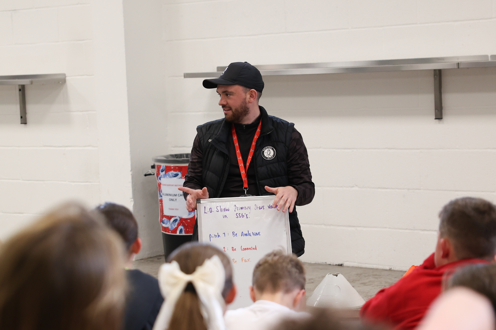

Maths for the Match
Welcome to the Maths for the Match project, where we are explore the science of football through fun experiments and activities!



About the Project
This project is a collaboration between the University of Bristol, the Robins Foundation, and the FUTURES program. We aim to engage primary school students in the science of football through interactive experiments and activities.
Ashton Gate Stadium Tour
The below leaflet sets out the data science, materials science and structural engineering you can see in the Ashton Gate stadium.
This is the teacher copy with the answers, no cheating!